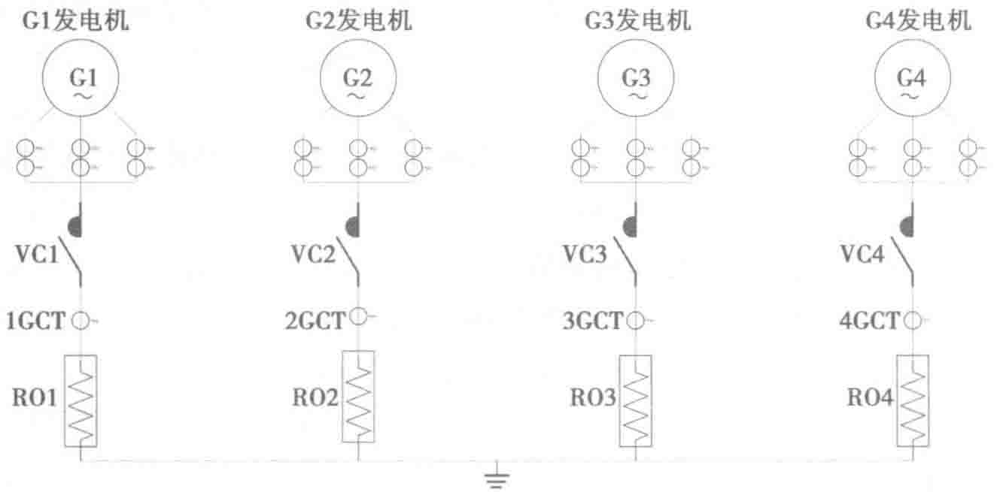

机组直接进排风的效果更好、机组效能更佳，容易施工安装，方便集中运营管理，可有效降低建设成本及运营费用。

- 柴油发电机组按需分批购置。在规划时将柴油发电机供电配套设施全部设计完成，在初期阶段把所有柴油发电机组配套设施全部预装完成，柴油发电机组可按需分批购置。
5.5.1 柴油发电机房选址及机房布局
1. 建筑室外及室内选址
（1）室外选址时应注意噪声对环境的影响，发电机房的位置应尽量远离居民区，以减少机组噪声及烟气排放对居民的影响，机房应尽量在开阔场地上修建，以利于机组进排风及散热。
（2）尽量避开数据中心建筑物的主入口、正立面等部位，以免排烟、排风对其造成影响。
（3）宜接近建筑物的变电所，这样便于接线，减少电能损耗，也便于运行管理。
（4）建筑内机房的空间应充分考虑机组及附件的体积，保证机组和附件有足够的安装空间，并保证通风条件满足机组及规范要求。
（5）按建筑防火规范宜布置在首层或地下一二层，不应布置在密集场所的上一层、下一层或贴邻；远离有振动影响的房间，宜设置在靠外墙部位，便于通风排烟。
（6）柴油发电机房选择安装位置时首先应满足相关规范的规定。一般在有条件的情况下，柴油发电机组首选安装在室内，如果建筑环境和条件不允许时，可选择采用集装箱方式安装在室外或建筑楼顶（前提是建筑结构必须满足承重等各项指标要求）。
（7）将柴油发电机组安装在室内，主要是考虑到安全性好、便于维护管理，机组的寿命周期在一定程度上会得到更大的保护，烟气污染及噪声处理更容易满足消防部门的要求。采用集装箱式的柴油发电机组安装在室外主要是为了减少建筑占用面积，小功率段单台集装箱式发电机组方便移动，可作为应急使用。新建的数据中心宜首选设计在建筑内，而面